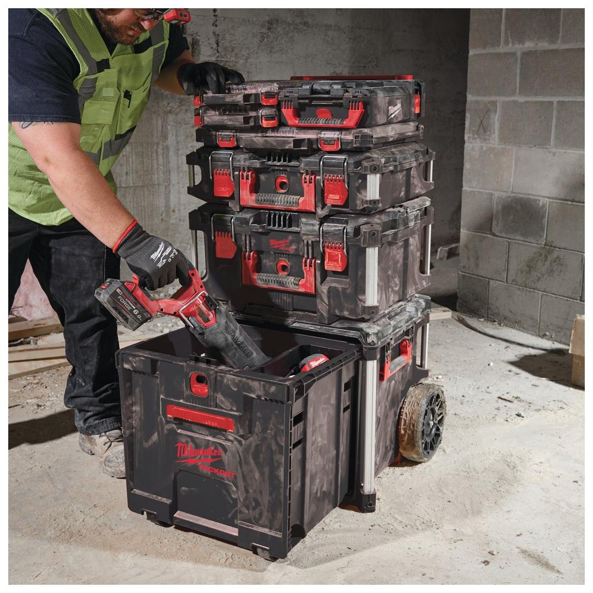
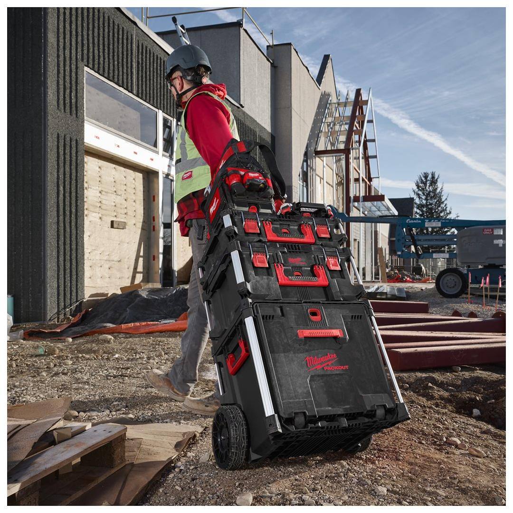
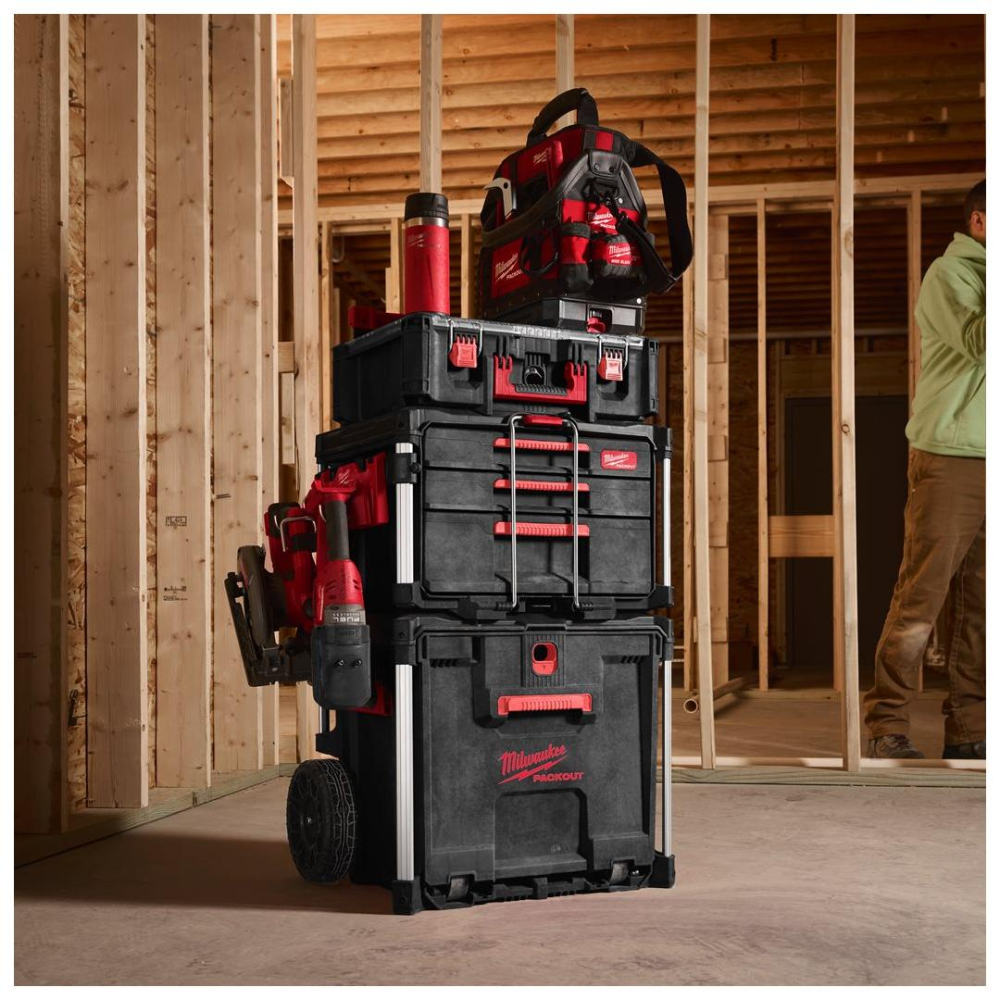
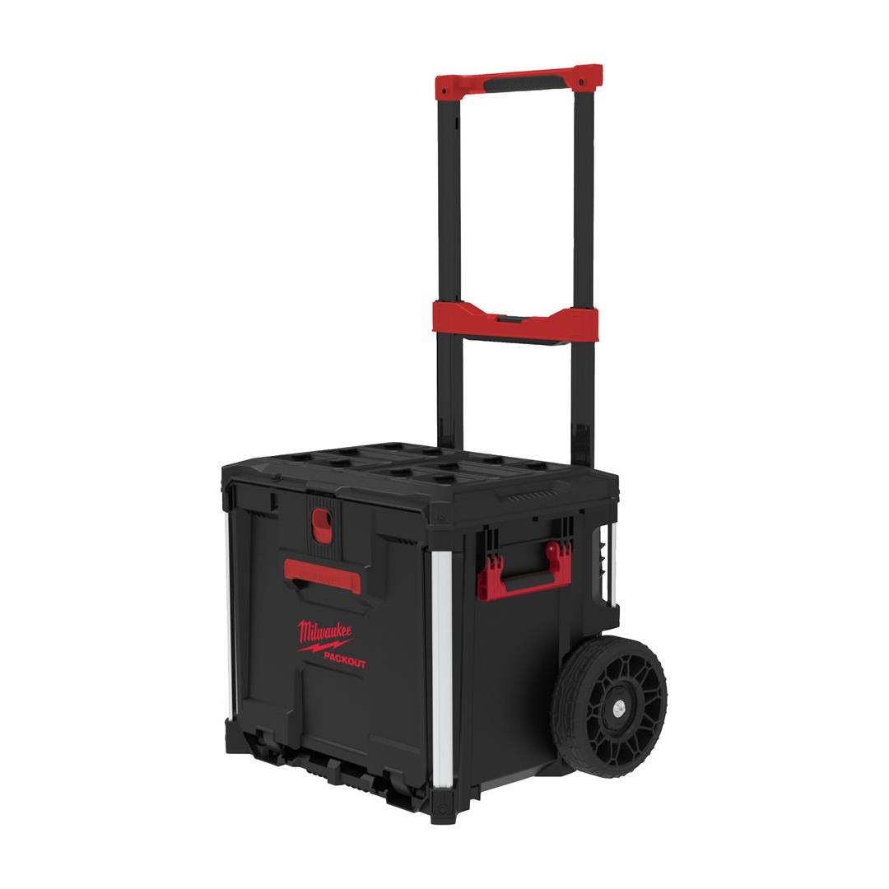

<h1>Milwaukee | Packout Rolling Drawer</h1><p>4932498651</p><div style="display:flex;flex-wrap:wrap;gap:8px"></div><h4>Features</h4><ul><li>Access your tools without unstacking boxes on top.</li><li>Constructed with impact resistant polymers for jobsite durability.</li><li>113 kg weight capacity on top.</li><li>68 kg weight capacity inside.</li><li>Metal reinforced corners for extra durability.</li><li>Robust 228 mm all terrain wheels.</li><li>Divider set and tray included for extra internal organisation.</li><li>Tool Box Attachments fit on the metal bars.</li><li>Part of the PACKOUT™ modular storage system.</li></ul><h4>Information</h4><table><tr><td>Capacity (l)</td><td>57</td></tr><tr><td>Dimensions (mm)</td><td>550 x 610 x 480</td></tr><tr><td>Dimensions [Inner][H x W x D | mm]</td><td>400 x 430 x 330</td></tr><tr><td>Pack quantity</td><td>1</td></tr></table>